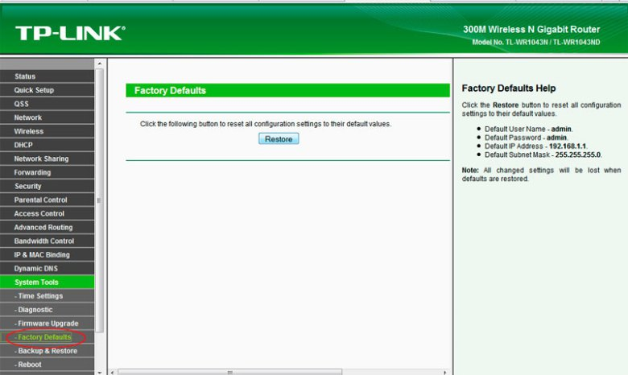
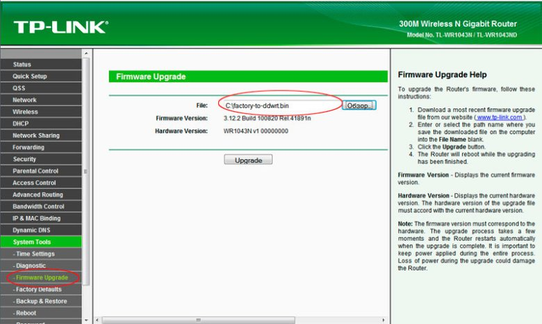
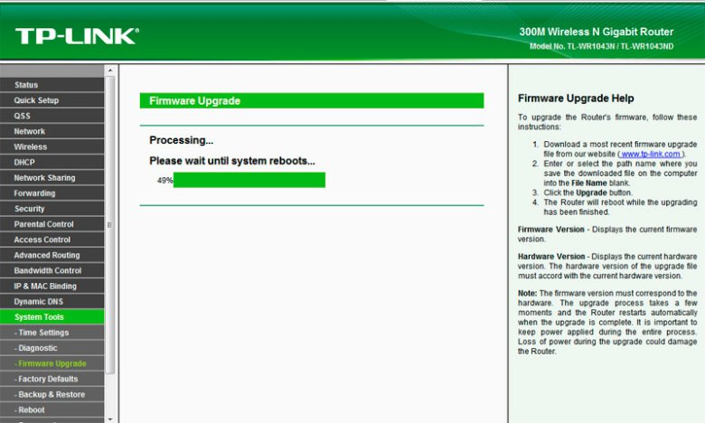
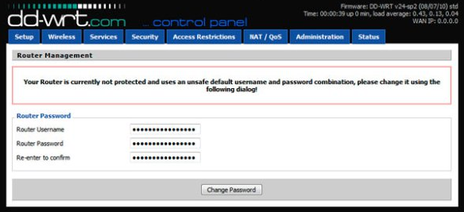
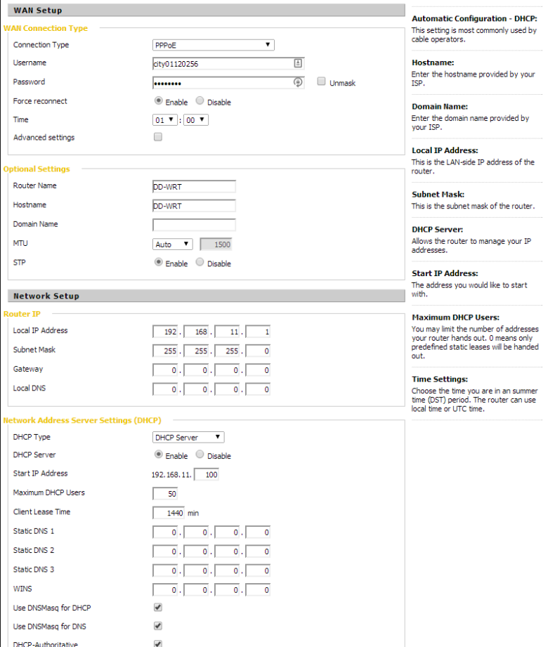
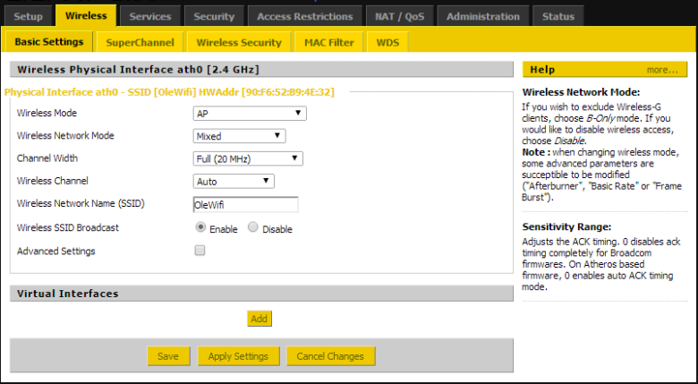

Прошивка
Сначала на роутер была установлена 02-17-11 factory-to-ddwrt.bin, а потом сверху 05-27-2013 tl-wr1043nd-webflash.bin




Скрины от dd-wrt.com
Дефолтный IP почему то стал 192.168.11.1 вместо 192.168.1.1
PPPoE — самый простой в настройке протокол, но и тут всё не обошлось так гладко.
После первой неудачной настройки я позвонил в ТехПоддержу Ситикома, но там мне дали четкий ответ «Настройкой роутера не занимаемся, блаблабла».
Опять же немного погуглив никаких тонкостей я так и не нашел, а настройку произвел опытным путем. Вдруг кто-то еще окажется в сложной ситуации. Вот собственно скрины


Вернуться к старой прошивке можно аналогичным способом, скачав официальную прошивку вот тут
http://www.tp-linkru.com/support/download/?model=TL-WR1043ND
Спасибо за внимание и поменьше вам потерянных пакетов!